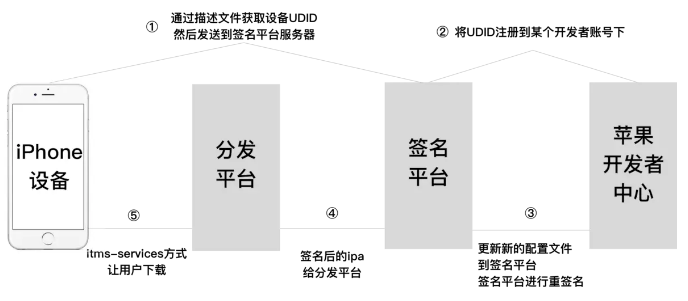
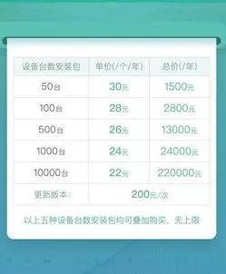

“苹果超级签”，无疑是当下棋牌行业的“热词”。纹桃在之前也发布了文章《什么是苹果“超级签”、“企业签”，一篇文章带你读懂》。文中详细阐述了超级签的发展历程、功能原理以及市场需求。

用户数量越多，拥有自己的超级签系统成本越低
看过纹桃之前介绍超级签文章的读者应该都知道，一个苹果个人开发者账号一年的费用是99美金，大概710元人民币的价格，可以签100台苹果设备。也就是说一台设备的成本价大概为7元，加上人工成本等，第三方超级签服务商一台设备的成本大概是10元。想要保障利润的话定价肯定还要更高。所以目前市场终端的价格是一台设备15——20元。对于有大量苹果用户的运营商来说，这个成本无疑是难以接受的。

所以从成本控制的角度来看，运营商必须拥有自己的苹果超级签系统。因为这意味着可以将超级签名的成本至少降低50%。而且这个成本会随着运营商苹果用户的增长，变得越来越低。总而言之一句话，拥有自己的苹果超级签系统，也就没有了中间商赚差价！
自主控制开发者账号及苹果包，签名更稳定
超级签名从面世起，就以其稳定性征服了众多备受掉签烦恼的运营商，但从纹桃了解的情况来看，苹果超级签也不能保证百分百不掉签。
据纹桃了解，前段时间就有部分第三方超级签服务商发生了集中封号掉签的情况。而到账个人开发者账号被封的原因，据业内人士的说法可能有以下几点：一是用于签包的个人开发者账号有问题（不限于支付信用卡、开发者账号地域等因素）；二是UDID下挂的APP太多。
作为运营商来说，你无法控制超级签服务商的个人开发者账号来源，也无法控制签名上在同一个UDID挂几个APP。而从签名商的角度看来，个人开发者账号被封了大不了给你重签（现实情况是没有几个签名商愿意给你重签，毕竟重签意味着他的成本成倍增加），但对运营商来说，一个开发者账号被封就意味着你永远失去了这个账户下的苹果用户。
而如果你拥有自己的超级签名系统，就完全不需要担心这些问题，你可以完全自主控制个人开发者账号来源和苹果包。稳定性无疑更高！
随时随地更新，运维响应速度更快
对于棋牌运营商来说，一个版本需要更新，运维工作人员24小时随时待命更新上线是一件很常见的事。
但如果把这件事交给第三方签名服务商来做，对方能不能7*24小时随时待命就很难说了。毕竟你没有直接给对方的运维工作人员发工资，人家能做到正常工作时间积极响应就已经非常不错了。
而如果是你自己的超级签名系统，毫无疑问，你可以随时随地更新自己的苹果包版本，随时随地添加可用设备数。哪怕有个人开发者账号出现问题，运维也能第一时间响应，配合运营处理问题。而这，是第三方签名商所不能做到的。
总而言之，拥有自己的苹果超级签系统，无疑比直接购买超级签设备数更划算，也更切合运营实际！而对于没有相应技术能力的运营商来说，自己开发一个苹果超级签系统肯定说存在困难的。自己去市面上找所谓的超级签源码，坑又太多。
考虑到广大棋牌运营商的实际需求，纹桃科技开发部门经过前段时间加班加点的工作，终于打造出了一套运营级别的苹果超级签名系统。先提前透露一下，纹桃IOS超级签名系统，支持源码开放，二次开发，定制开发！
而更多关于纹桃超级签名系统的内容，小编将在下周给大家做更详细的介绍！更多有关纹桃苹果超级签名业务需求，可联系我司商务进行咨询。联系电话：18711739336

扫码咨询更多“纹桃超级签名”问题

游戏产品
PRODUCTS

售后服务
SERVICE

技术支持
TECHNOLOGY

运营指导
OPERATING